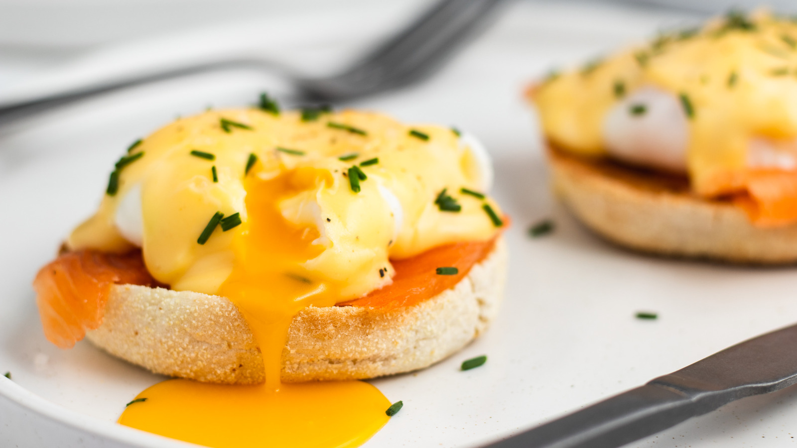

Eggs Benedict is a breakfast or brunch meal consisting of toasted halves of an English muffin that are topped with a slice of ham or bacon, a poached egg, and sauce Hollandaise. Although there are numerous theories about the origin of the dish, most people agree that credit should be given to Delmonico's Restaurant.
Meal prep time : 35 minutes
Servings : 4